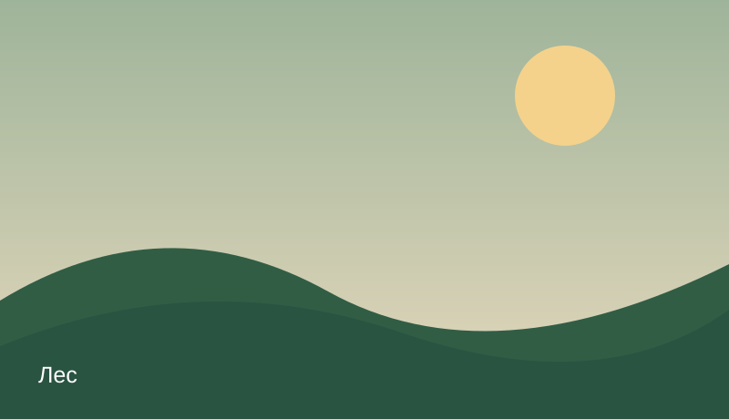

Удивительные места, богатая история и бескрайние просторы. Собирайте маршруты, делитесь открытиями и вдохновляйтесь путешествиями по родному краю.
Исследовать каталог →Всё важное для путешествия — в одном месте
Удобная загрузка нескольких фотографий каждого места.
Находите достопримечательности по географическим координатам.
Подробные описания от жителей и краеведов.
Информация и впечатления путешественников.